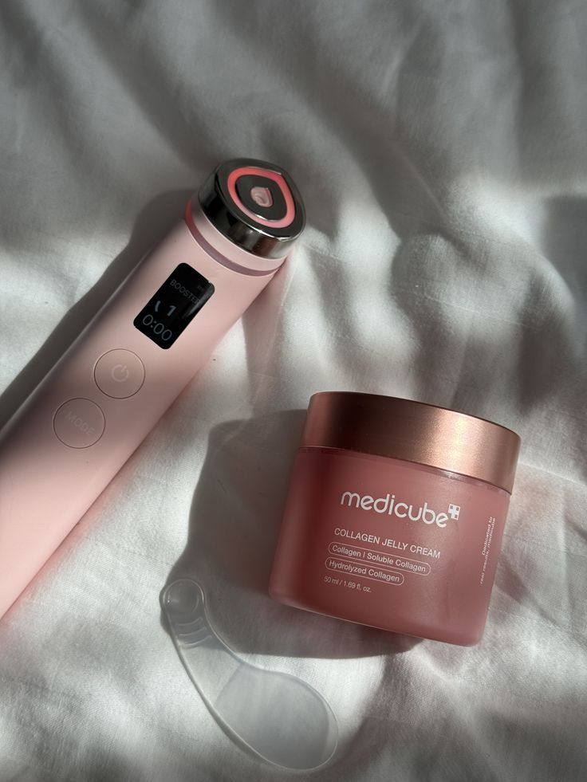
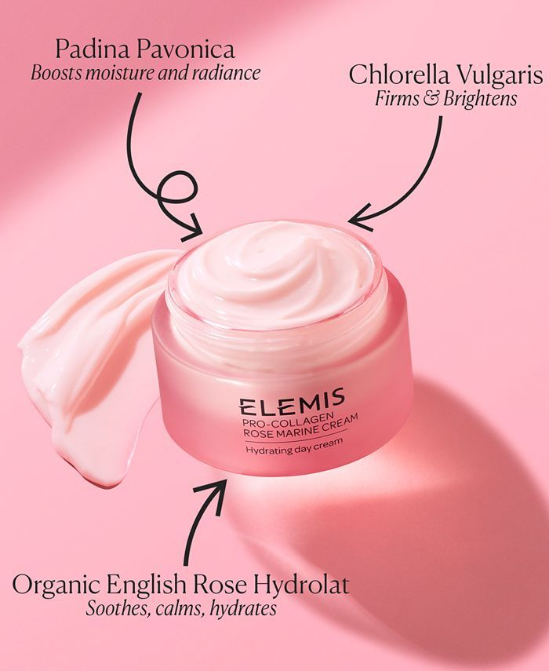
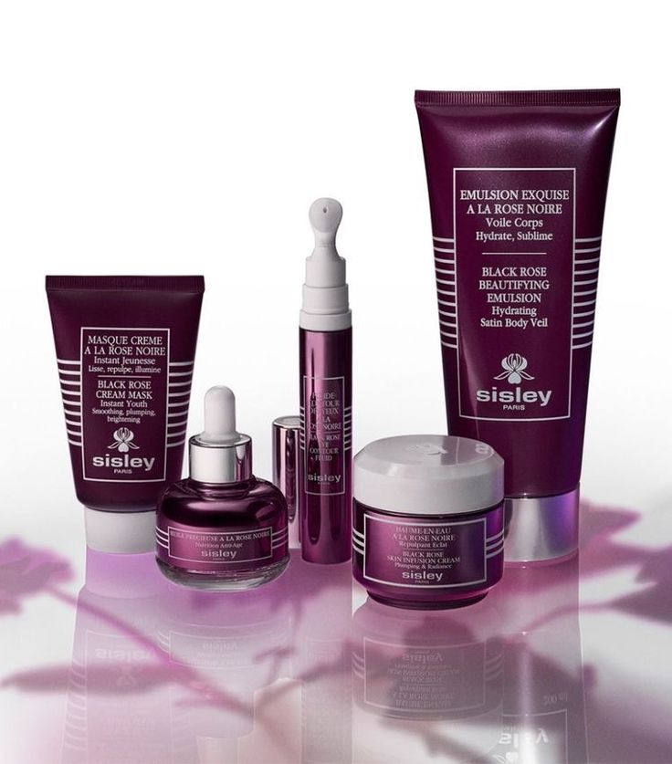
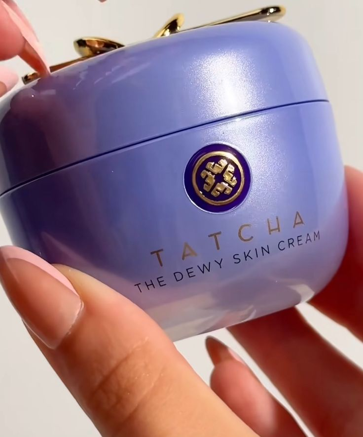
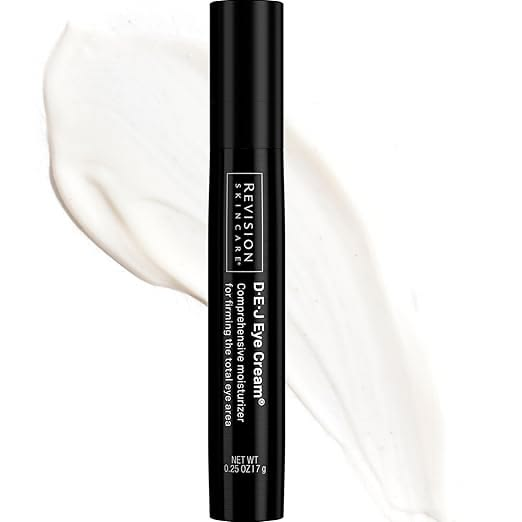
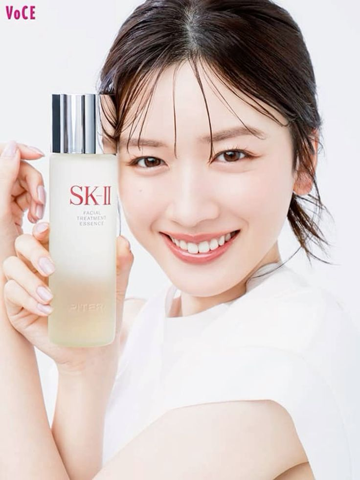
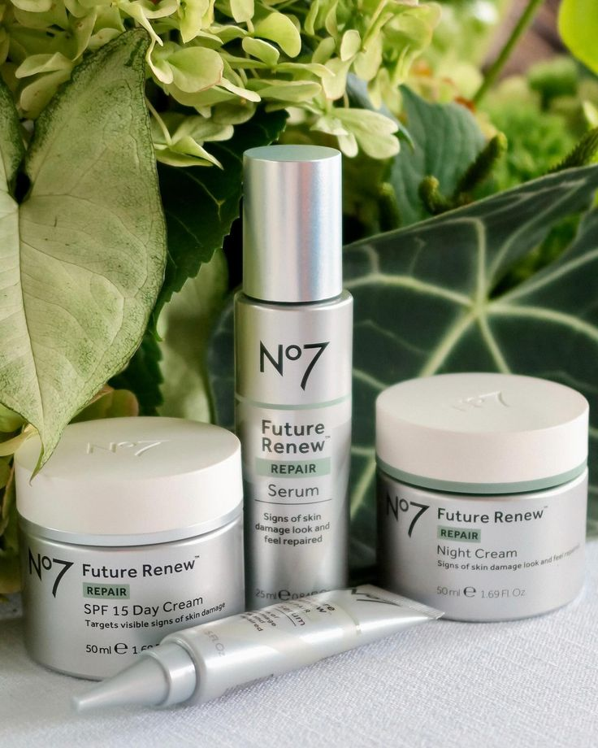
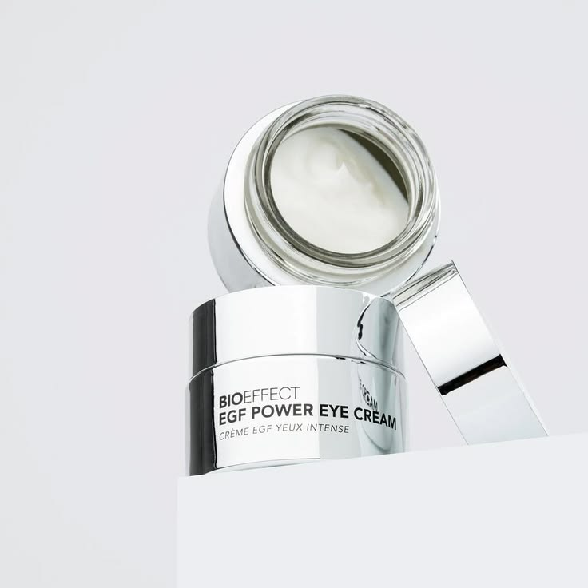

These aren’t random products — these are the skincare upgrades people swear by once they try them. If glowing, smooth, healthy skin is your goal, this is where it starts.

Imagine your skin looking smoother, brighter, and naturally radiant — without layers of makeup. This device turns your routine into a luxury facial experience at home. Once you use it, your skincare stops feeling like a chore and starts feeling like something you actually look forward to.
Why it’s worth it: It enhances absorption, boosts glow instantly, and gives that “glass skin” look people chase for months.
Key features: 6-in-1 technology, glow enhancement, firming effect, Korean skincare innovation.
Why people love it: Visible results fast, spa-like experience at home, makes every product work better.
Check Price on Amazon
Dry, tired skin instantly transforms into something soft, plump, and glowing. This is the kind of moisturizer that makes people ask what you’re using — because your skin just looks healthier.
Why it’s worth it: Deep hydration + visible wrinkle reduction in a short time.
Key features: Collagen support, rose-infused hydration, clinically proven results.
Why people love it: Lightweight yet rich, instantly soothing, gives a natural glow.
Check Price on Amazon
This is not just skincare — it’s an experience. Every product works together to deeply nourish, smooth, and revive your skin. The kind of routine that makes you feel expensive.
Why it’s worth it: Complete anti-aging system in one set.
Key features: Face oil, cream, mask, eye treatment — all premium formulas.
Why people love it: Skin looks instantly healthier, smoother, and more radiant.
Check Price on Amazon
If your skin feels dull or dry, this changes everything. It melts into your skin and leaves it soft, glowing, and naturally radiant — like you’re always having a good skin day.
Why it’s worth it: Deep hydration + instant glow.
Key features: Plumping hydration, protective barrier, rich texture.
Why people love it: Skin looks smoother instantly, makeup sits better, glow lasts all day.
Check Price on Amazon
Dark circles, fine lines, tired eyes — this targets all of it. It’s one of those small upgrades that makes a huge difference in how your entire face looks.
Why it’s worth it: Firms, smooths, and brightens delicate eye area.
Key features: Anti-aging formula, hydration boost, wrinkle reduction.
Why people love it: Eyes look fresher, makeup looks better, results build over time.
Check Price on Amazon
This is the secret behind that smooth, radiant, poreless look. Once you try it, your skin feels clearer, brighter, and more refined.
Why it’s worth it: Targets dullness, uneven tone, and fine lines.
Key features: Facial essence + hydrating masks.
Why people love it: Skin looks noticeably clearer and more luminous.
Check Price on Amazon
If your skin feels tired, uneven, or aged from sun exposure, this routine helps bring it back. It works quietly in the background while you go about your day.
Why it’s worth it: Targets visible damage and restores smoother skin.
Key features: Serum + SPF day cream + night repair cream.
Why people love it: Skin looks healthier, more even, and refreshed.
Check Price on Amazon
This isn’t just hydration — it’s advanced care for your eyes. It smooths, brightens, and firms in a way that makes you look more awake and refreshed.
Why it’s worth it: Multi-action anti-aging treatment.
Key features: EGF, bakuchiol, niacinamide.
Why people love it: Reduces puffiness, softens lines, brightens dark circles.
Check Price on Amazon